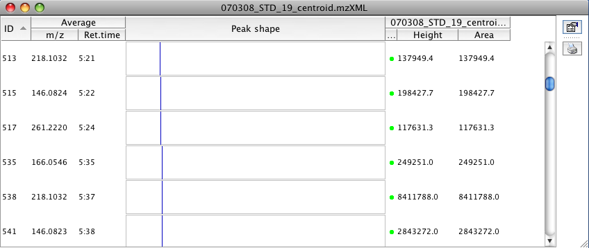

Peak list obtained from MS/MS peak detector

The same peak list after running peak extender
This module extends the peaks in a peak list in both directions of the retention time. The purpose is mainly to add missing data to peak lists produced by the MS/MS Peak List Builder, which only detects a single data point per peak. The extending is performed scan-by-scan in both directions by searching for data points within given m/z tolerance and above given minimal height. When no data point is found, extending is stopped.

Peak list obtained from MS/MS peak detector
The same peak list after running peak extender